Semaine 3 : cap sur Ottawa
Première rencontre avec Rathush
Grande étape de la semaine : la toute première rencontre en personne avec mon tuteur Rathush. On avait échangé jusque-là uniquement en visio, donc ça change. On a pu discuter du projet de vive voix, visiter les locaux, et il m'a montré concrètement ce sur quoi il travaille. On est ensuite allés déjeuner ensemble — et il m'a fait faire un tour dans sa voiture, dont il est visiblement assez fier (il a raison, elle est belle).
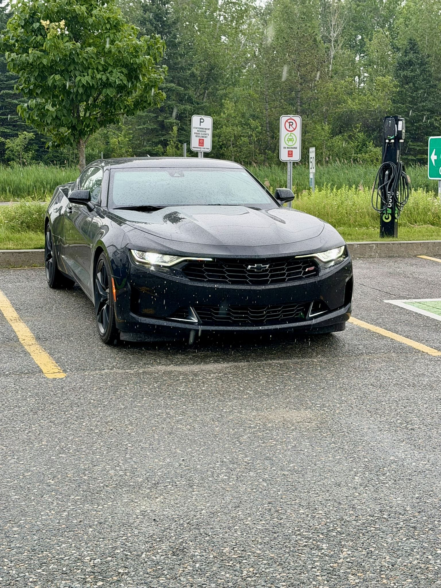
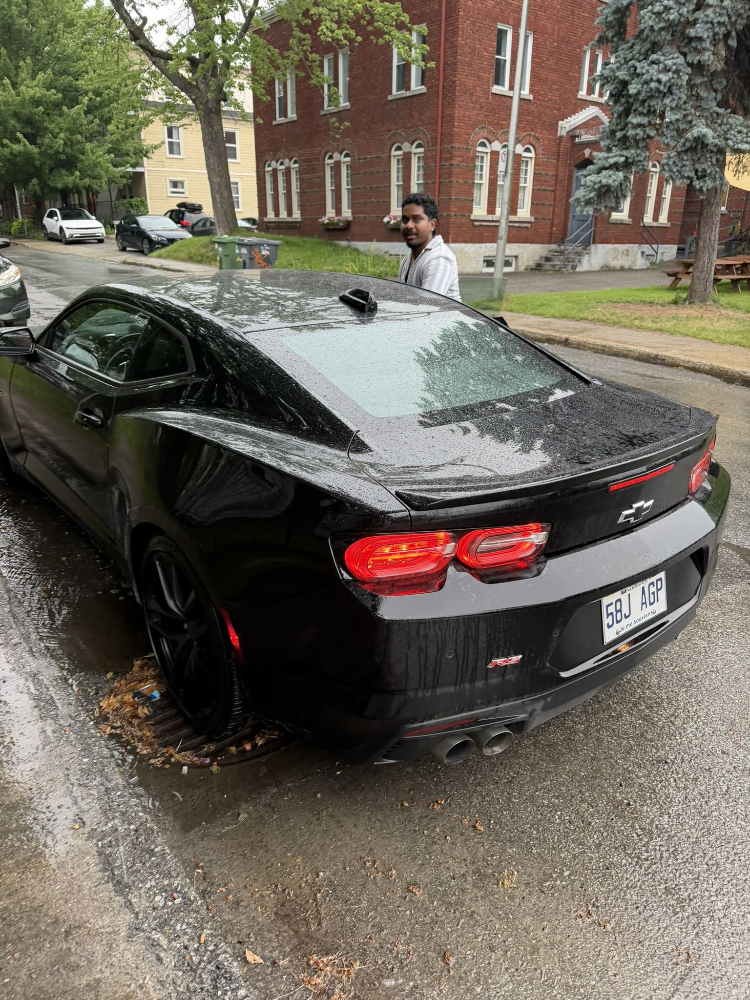
Le reste de la semaine s'est déroulé comme la précédente : travail à l'université, dans la continuité du projet HyphTech.
Feu d'artifice à Sherbrooke
Il y avait un festival à Sherbrooke cette semaine-là, avec un feu d'artifice au bord du lac au centre-ville. L'occasion de profiter d'un peu d'animation locale, à deux pas de l'appartement.
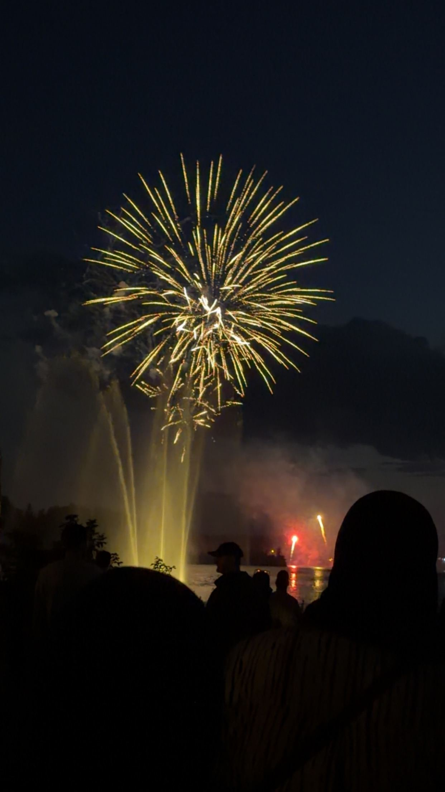
Le week-end : direction Ottawa
Avec Victor et Thomas, on a organisé un road trip jusqu'à Ottawa, la capitale du Canada. Départ le vendredi, avec un premier arrêt à Cornwall, une ville juste avant Ottawa, posée le long du fleuve Saint-Laurent. En regardant l'horizon depuis la rive, on aperçoit déjà le territoire américain, de l'autre côté du fleuve — une frontière qu'on ne voit pas tous les jours d'aussi près.
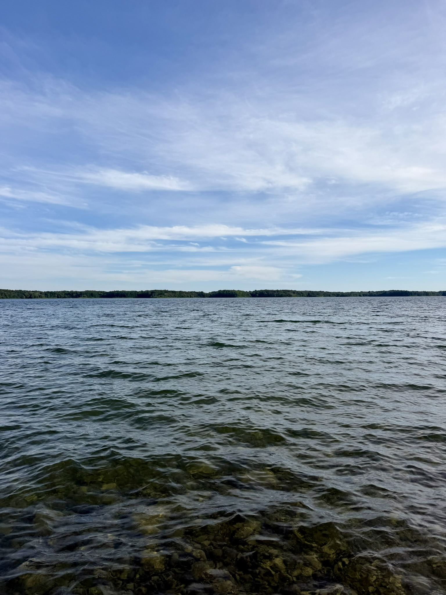
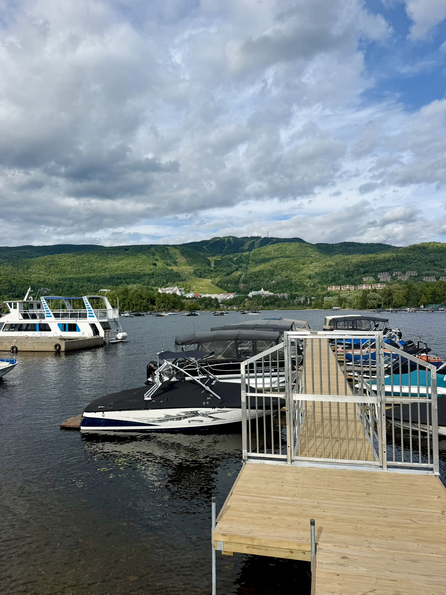
Ottawa sous la pluie
Le samedi, direction Ottawa pour visiter la ville, sous un temps plutôt maussade. Petite parenthèse historique : Ottawa s'appelait à l'origine Bytown, fondée en 1826 autour de la construction du canal Rideau. Elle est renommée Ottawa en 1855, puis choisie par la reine Victoria en 1857 comme capitale — notamment parce qu'elle se situe pile à la frontière linguistique entre francophones et anglophones du pays, et plus à l'abri d'éventuelles attaques depuis les États-Unis que Toronto, Montréal ou Québec. Elle devient officiellement la capitale du Canada en 1867.
Ce qui frappe en arrivant, c'est la taille : la ville est étonnamment petite pour une capitale, rien à voir avec Montréal qui est beaucoup plus grande. C'était aussi ma première fois en Ontario, et c'est assez étrange de sentir le basculement du français vers l'anglais : à peine la frontière du Québec passée, tout le monde reparle anglais.
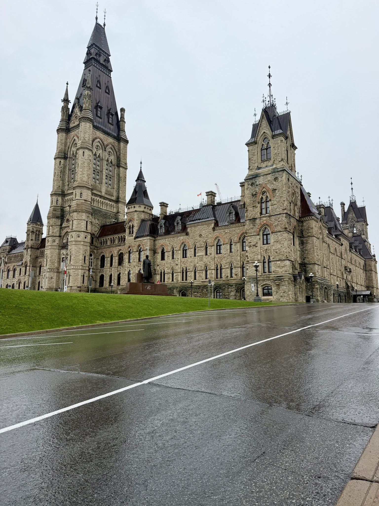
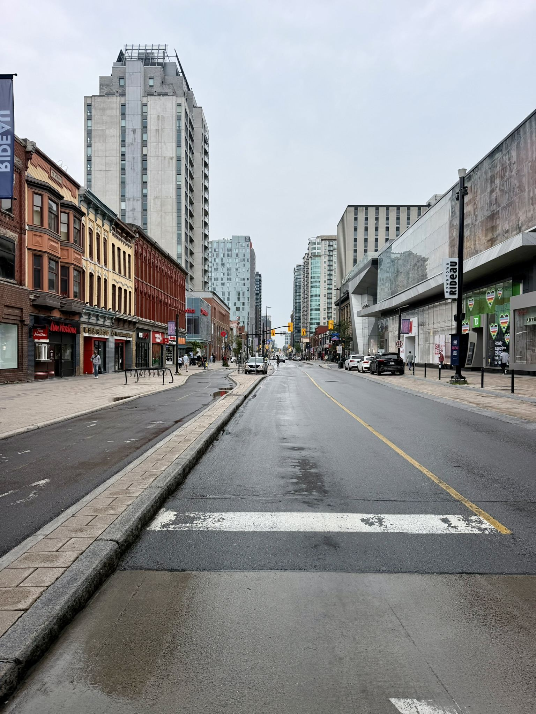
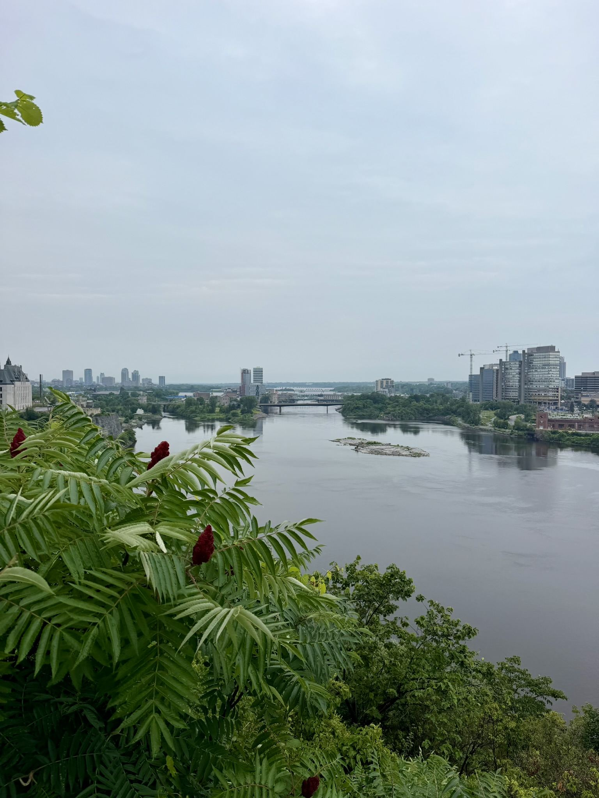
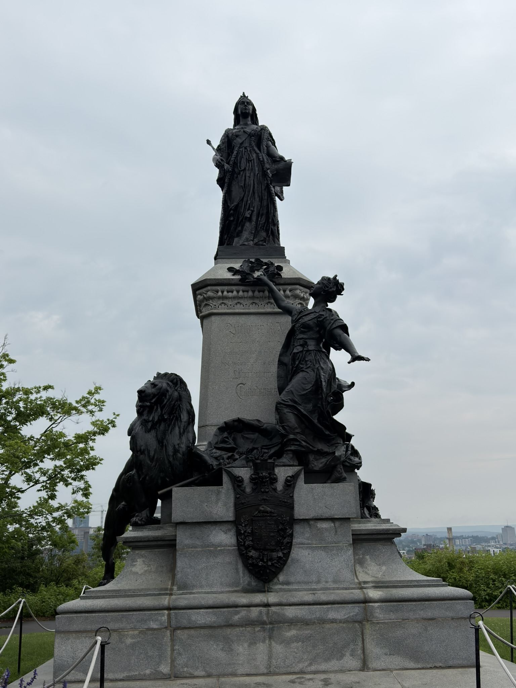
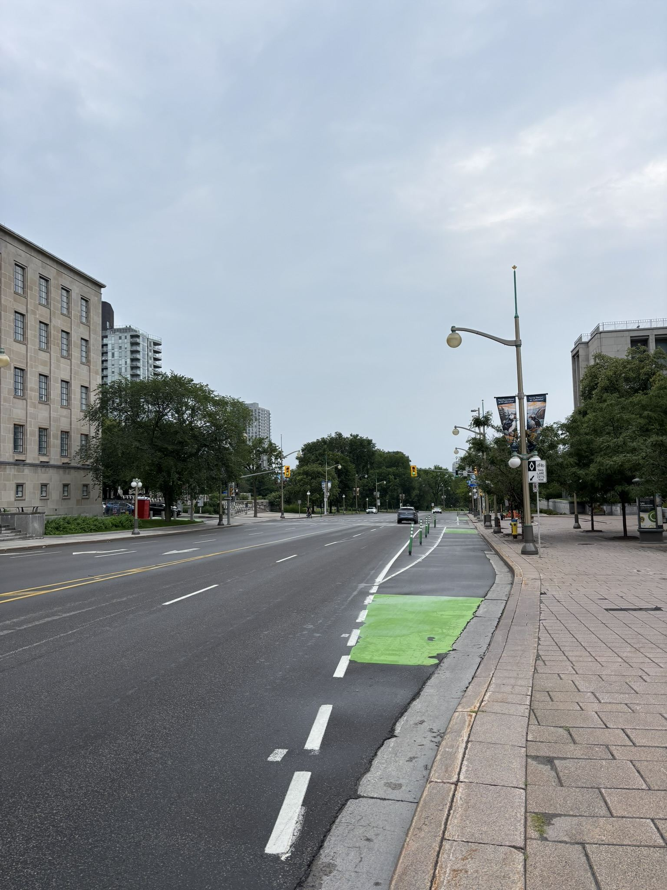
Dimanche nature : Parc de Plaisance
Pour finir le week-end, direction le parc national de Plaisance, le long de la rivière des Outaouais, où on a pu voir la chute du Moulin ainsi que profiter du parc. Un bon bol d'air avant de reprendre la route pour Sherbrooke.
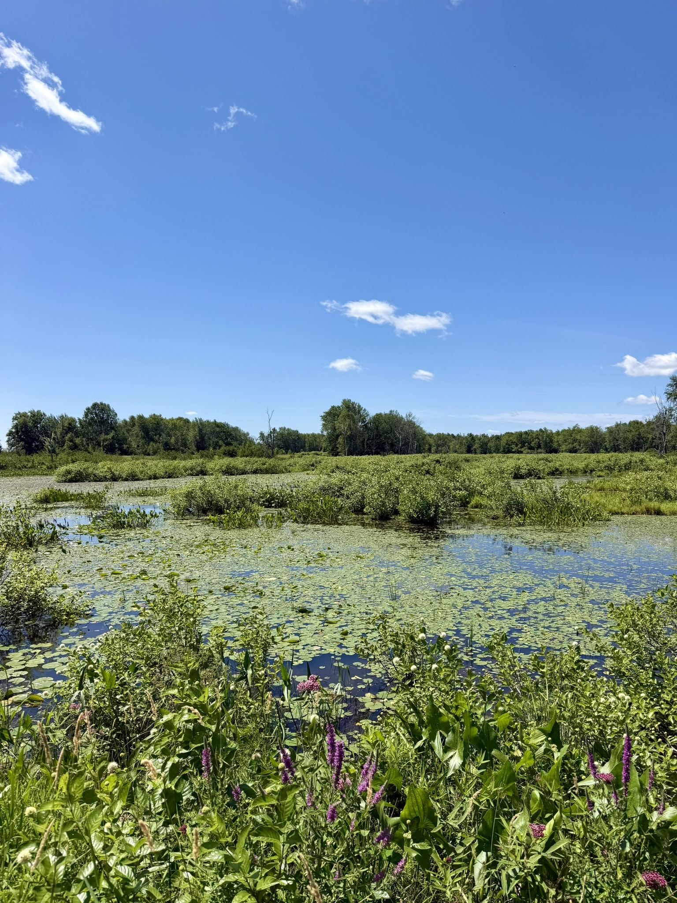
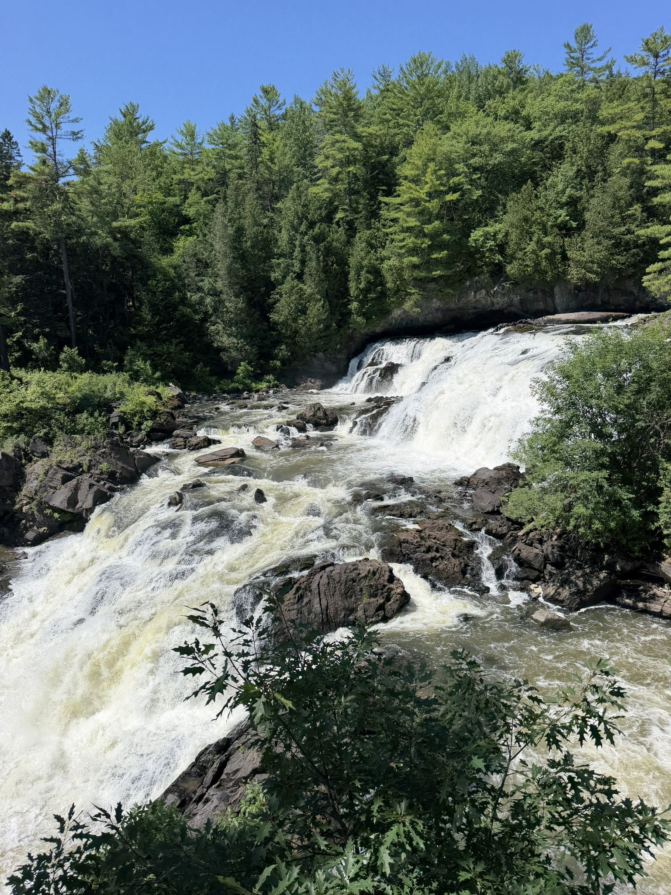